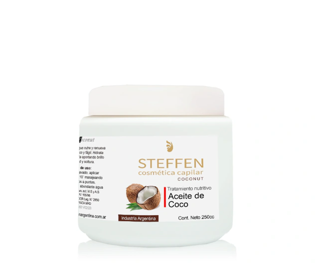
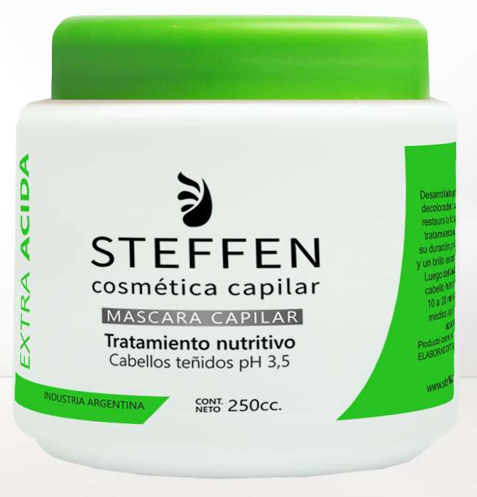
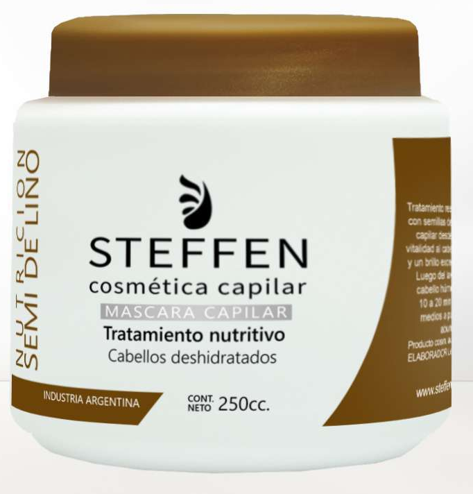
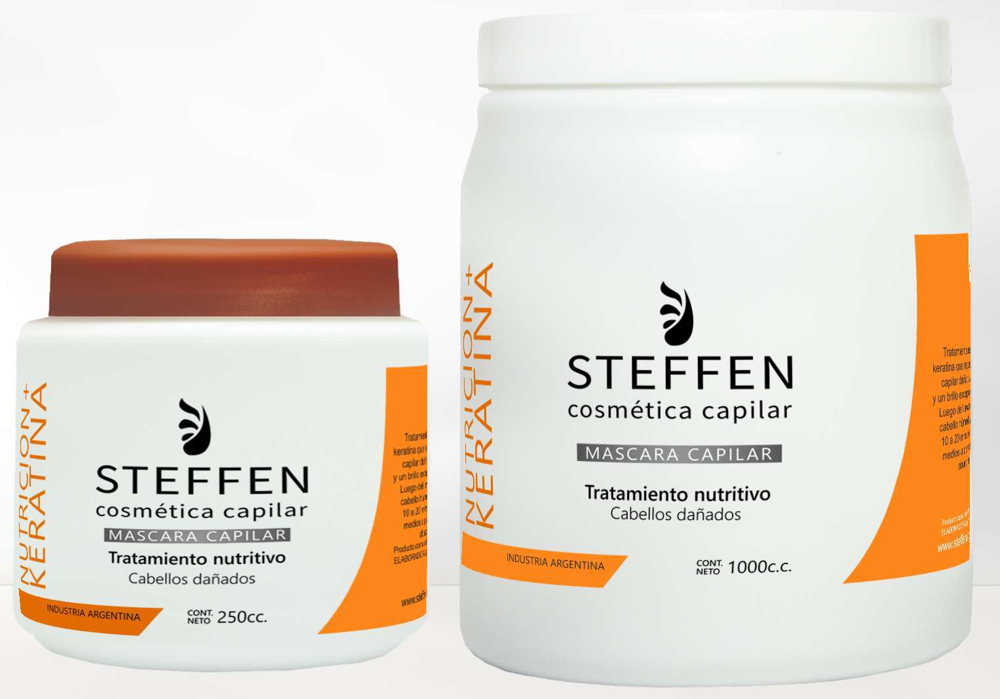
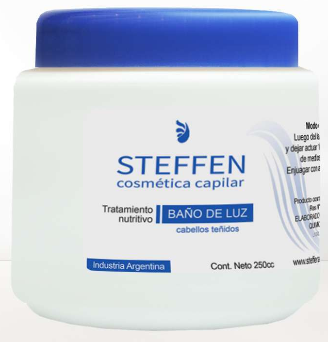
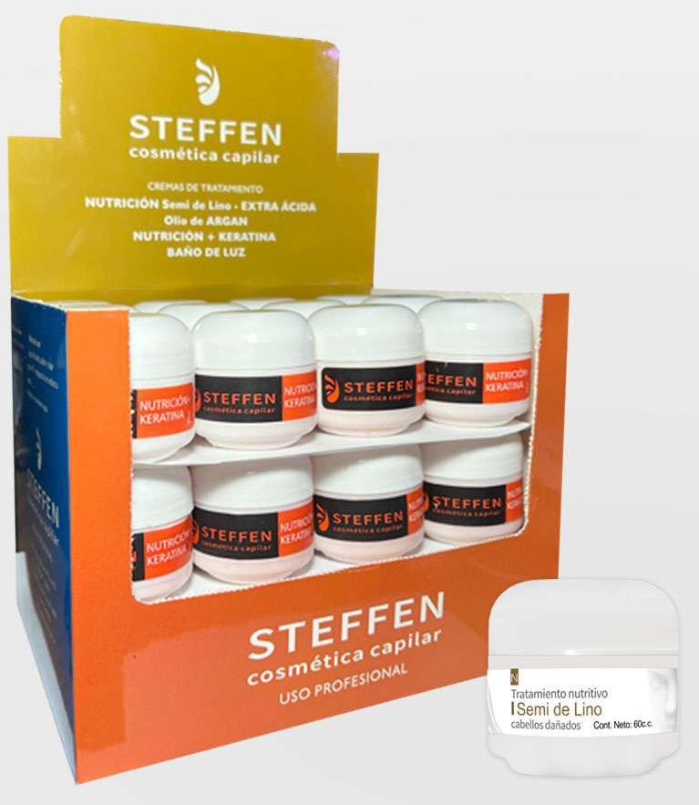

Tratamientos nutritivos de uso profesional del catálogo Steffen.

Pote de 250 cc.
Línea Coconut
Cabellos secos, muy secos y frágiles
Tratamiento nutritivo intensivo con aceite de coco que renueva las fibras capilares e hidrata intensamente. Aporta suavidad, soltura y brillo.
Modo de uso
Lavar bien el cabello y secar con toalla. Aplicar masajeando y estirando de medios a puntas. Dejar actuar de 10 a 20 minutos y enjuagar con abundante agua.
Presentaciones según el catálogo
Caja exhibidora de 36 unidades de 60 cc. Pote de 250 cc. Pote de 1000 cc (contenido neto pendiente de confirmación).
Comprar en Tiendanube
Pote de 1000 cc.
Olio de Argán
Cabellos secos
Nutre e hidrata el cabello desde la raíz y aporta suavidad, soltura y brillo.
Modo de uso
Después del lavado, aplicar sobre el cabello húmedo. Dejar actuar de 10 a 20 minutos, masajeando de medios a puntas. Enjuagar con abundante agua.
Presentaciones según el catálogo
Caja exhibidora de 36 unidades de 60 cc. Pote de 250 cc. Pote de 180 cc en estuche. Pote de 1000 cc.
Comprar en Tiendanube

Pote de 250 cc.
Extra Ácido
Cabellos teñidos, decolorados o alisados
Su pH ácido restaura la fibra capilar sometida a tratamientos químicos y prolonga su duración y color. Aporta suavidad y brillo.
Modo de uso
Después del lavado, aplicar sobre el cabello húmedo. Dejar actuar de 10 a 20 minutos, masajeando de medios a puntas. Enjuagar con abundante agua.
Presentaciones según el catálogo
Caja exhibidora de 36 unidades de 60 cc. Pote de 250 cc. Pote de 180 cc en estuche. Pote de 1000 cc.
Comprar en Tiendanube

Pote de 250 cc.
Nutrición Semi de Lino
Cabellos dañados
Tratamiento nutritivo que repara y fortalece la fibra capilar dañada. Aporta brillo, suavidad y soltura.
Modo de uso
Después del lavado, aplicar sobre el cabello húmedo. Dejar actuar de 10 a 20 minutos, masajeando de medios a puntas. Enjuagar con abundante agua.
Presentaciones según el catálogo
Caja exhibidora de 36 unidades de 60 cc. Pote de 250 cc. Pote de 180 cc en estuche. Pote de 1000 cc.
Comprar en Tiendanube

Potes de 250 y 1000 cc.
Nutrición + Keratina
Cabellos dañados
Tratamiento nutritivo que repara y fortalece la fibra capilar dañada. Aporta brillo, suavidad y soltura.
Modo de uso
Después del lavado, aplicar sobre el cabello húmedo. Dejar actuar de 10 a 20 minutos, masajeando de medios a puntas. Enjuagar con abundante agua.
Presentaciones según el catálogo
Caja exhibidora de 36 unidades de 60 cc. Pote de 250 cc. Pote de 1000 cc.
Comprar en Tiendanube

Pote de 250 cc.
Baño de Luz
Todo tipo de cabello
Tratamiento nutritivo que aporta brillo, suavidad y soltura.
Modo de uso
Después del lavado, aplicar sobre el cabello húmedo. Dejar actuar de 10 a 20 minutos, masajeando de medios a puntas. Enjuagar con abundante agua.
Presentaciones según el catálogo
Caja exhibidora de 36 unidades de 60 cc. Pote de 250 cc. Pote de 180 cc en estuche. Pote de 1000 cc (contenido neto pendiente de confirmación).
Comprar en Tiendanube

Caja exhibidora del catálogo Steffen 2025.
Caja exhibidora de máscaras
Presentación de 36 unidades de 60 cc. El catálogo incluye Nutrición Semi de Lino, Nutrición + Keratina, Extra Ácido, Olio de Argán, Baño de Luz y Línea Coconut.